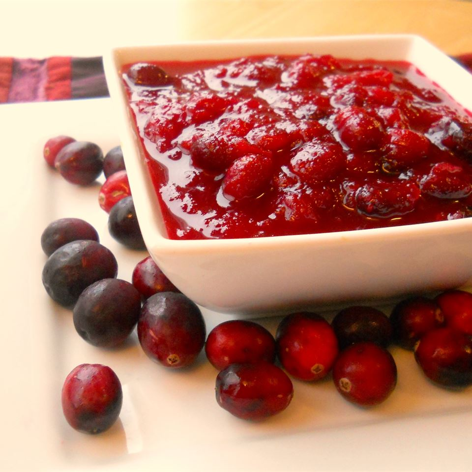

Cranberry Sauce

Description
This homemade cranberry sauce is classic. Made from fresh or frozen cranberries
and ready in 20 minutes, it's a must-have for Thanksgiving dinner.
Ingredients
- 12 ounces cranberries
- 1 cup white sugar
- 1 cup orange juice
Steps
-
In a medium sized saucepan over medium heat, dissolve the sugar in the orange
juice. Stir in the cranberries and cook until the cranberries start to pop
(about 10 minutes). Remove from heat and place sauce in a bowl. Cranberry
sauce will thicken as it cools.
Home